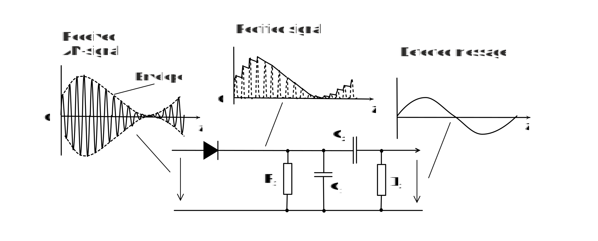

Objective of this assignment is to clarify operation of Amplitude Modulation (AM). AM is the oldest continuous wave (CW) modulation method and easiest to understand. It is not used in new systems in its original full carrier form. However, it is still important to understand AM, because its suppressed carrier variant is used together with Phase Modulation in most modern digital systems.
AM is the oldest Continuous Wave (CW) modulation methods, and it transfers spectrum of analog message or data from around zero frequency (baseband) to higher frequencies with the help of the high frequency carrier wave. It is a pure amplitude modulation method where frequency and phase shift of the carrier wave are constant and amplitude variation contains information.
The unique property of AM is that the envelope of the modulated carrier has the same shape as the message as shown in Figure 1. The carrier waveform is Ac cos(ct) with constant carrier amplitude Ac. Carrier amplitude is increased or decreased in the modulator depending on the message value. AM modulator in Figure 1 adds DC to modulating message and them DC-shifted message and carrier waveform are multiplied to produce modulated output waveform in Figure 1. Detailed implementation of AM-modulator is studied in Exercise 1.
Operation of an AM modulator
In our example modulating analog message is a single tone, cosine or sine waveform consisting only one frequency. Its spectrum contains only this single component at frequency fm as shown in figure below. Carrier waveform is a constant frequency, constant amplitude cosine waveform at high frequency fc. Its spectrum is also shown in figure below.
Spectrum of AM modulation, when the modulating message is a tone
Modulation index has value between 0 and 1 or 0% and 100% and it defines modulation depth that is how much message is allowed to change amplitude of the carrier. Figure below shows maximum modulation depth where nominal carrier amplitude Ac is varied between 0 (amplitude decreased by 100%) and 2Ac (amplitude doubled, increased by 100%). It must not exceed 1 (100%), otherwise overmodulation occurs, see figure below. This causes envelope distortion and we cannot detect message properly by following carrier’s envelope only.
Modulation depth and overmodulation
A great advantage of full carrier AM was that for message detection we need just to follow envelope of the carrier waveform. Receiver does not need to know exact frequency or phase shift of the carrier. This made it possible to make low cost broadcast radio receivers almost one hundred years ago. Figure 4 shows actual implementation of envelope detector. It contains rectifier (diode), Low Pass Filter (R1 and C1) and DC-block (C2)
Envelope detector for AM
Envelope detector is studied in Exercise 3.
Figure below shows a simple example of full carrier ASK, where modulating data is periodic sequence of binary ones and zeros. Modulation index or depth is 100%. In ASK we transmit radio bursts which represent value of a digital symbol.
ASK for binary data …101010…
When data is originally in bipolar format as in figure 5, we need to add DC voltage 1 V to data and then multiply carrier by that sum signal.
1. What does the AM-modulator transmit when modulating message is zero?
2. In AM modulator the message varies carrier’s
3. Output of envelope detector follows received signal’s
4. In digital AM, ASK, digital message is transmitted as a discrete value of carrier’s
When you have answered all the questions you can submit your answers.
Congratulation, you have passed the test and may start Exercise 1: Signal wavefom and Spectrum.
Test failed. Consider again answers that are not correct.